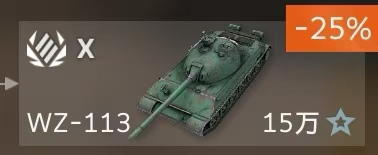
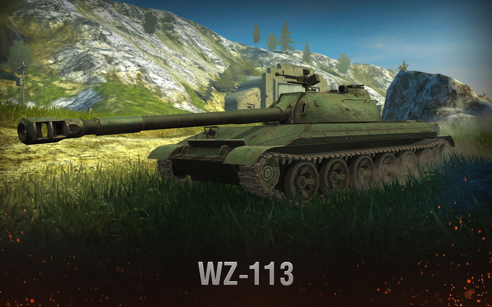

Congratulations! You pass the test and get Heavy Tank WZ-113!
Introduction
113 型的开发始于 1963 年。该车辆被设想为 WZ-111 的替代品，并使用中型坦克的零部件。
然而，由于主战坦克的发展，该项目被取消。
最初作为中国重型坦克系列中唯一的最终坦克推出。113 是 WZ-111-1-4 的奇怪延续。
它的火炮口径从 130 毫米降级到 122 毫米，对于期待类似于 IS-7 的重击重型坦克的玩家来说，这可能是一个巨大的障碍。
其他硬属性，例如只有 120 毫米正面车体装甲，安装在 IX 级 WZ-120 中型坦克上的 122 毫米火炮使这辆坦克看起来平庸，
然而，113 本身就是一头野兽。
它是游戏中为数不多的“重中型”坦克之一，结合了两全其美的优势，拥有不错的倾斜装甲保护和重击火炮，同时仍然具有类似中型坦克的机动性。
113 可以轻松跟上盟友中型坦克，为装甲较弱的中型盟友提供高单发基础伤害和装甲，
并且可以像中型坦克一样，从侧翼包抄敌方坦克并进行近距离格斗。
这款重型坦克对于中型坦克驾驶员来说绝对是熟悉的感觉，玩起来非常棒。

The process must be hard!
Click here to get other tanks.